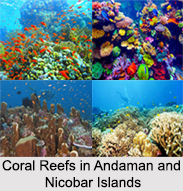
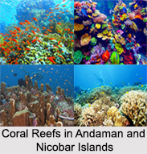

resume
Email: shivaniladia@gmail.com | Phone: 585-267-0014 | Location: Wentzville, Missouri 63385, USA
Summary
I am a passionate and dedicated individual with a background in Botany and a strong interest in coding and web development. I have recently started learning JavaScript from LaunchCode and am excited about the opportunities it offers to create innovative solutions and a new dimension to my career.
Professional Journey
Master's Degree in Botany
I hold a Master's degree in Botany, where I developed strong analytical and research skills. My studies have equipped me with a deep understanding of plant biology and ecology.
Transition to Coding
After working in the field of Botany for several years, I decided to pursue my interest in coding. I enrolled in LaunchCode online courses to learn JavaScript and web development, and I have been actively building my skills in this area.
Skills
- JavaScript
- HTML
- CSS
- Problem-solving
- Attention to detail
Aspirations as a Coder
My goal is to become a proficient full-stack developer and work on projects that have a positive impact on society. I am particularly interested in developing applications related to environmental conservation and sustainability.
Education
Master of Science in Botany
Sarojini Naidu P.G. College, India; Year : 2012
Bachelor of Science in Botany
Sarojini Naidu P.G. College, India; Year : 2008
Experience
No work experience in coding yet, but eager to start my career in web development.
Projects
I have completed several projects as part of my JavaScript learning journey, including a simple Hello World! application and a personal portfolio website.
Contact
Please feel free to contact me via email or phone if you have any opportunities or would like to connect!
 
